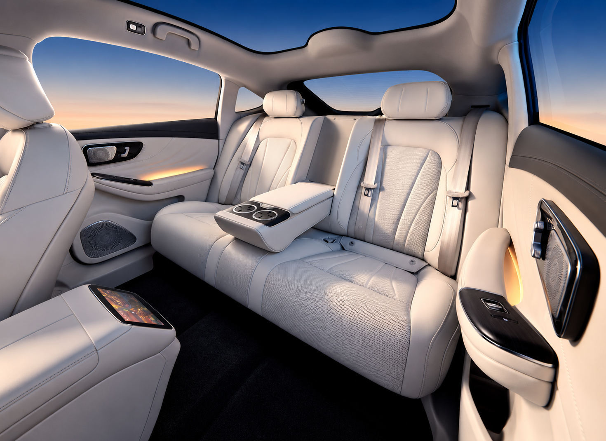
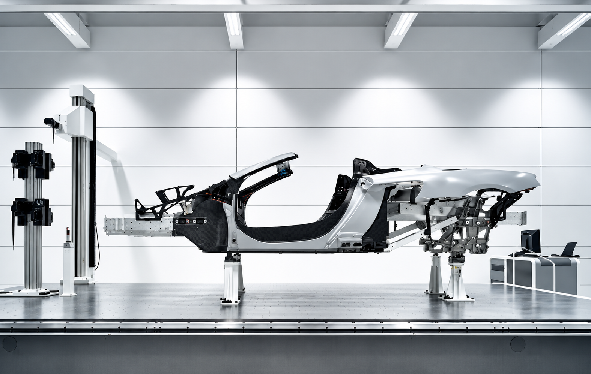
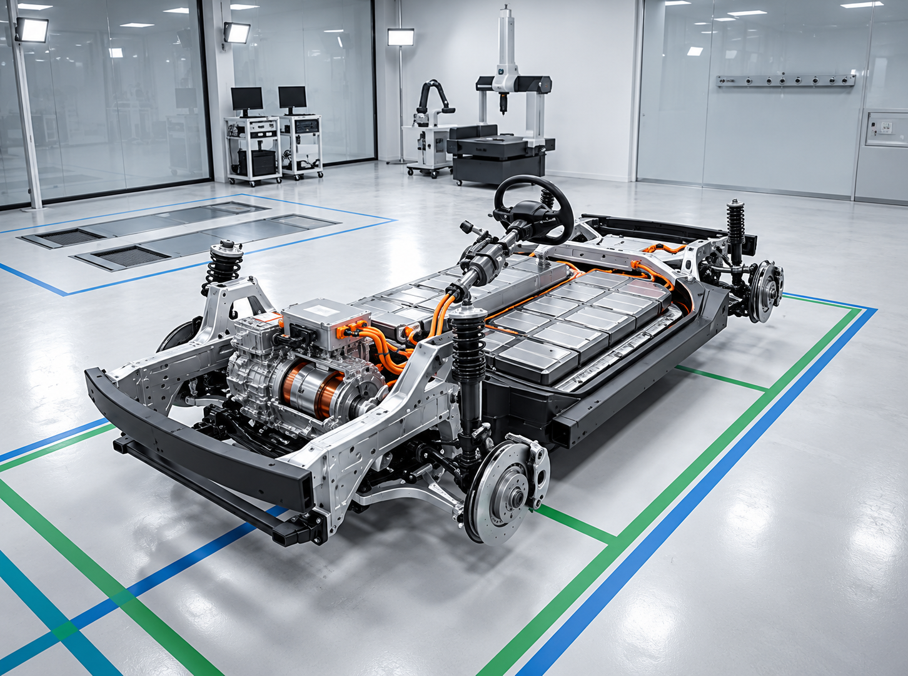
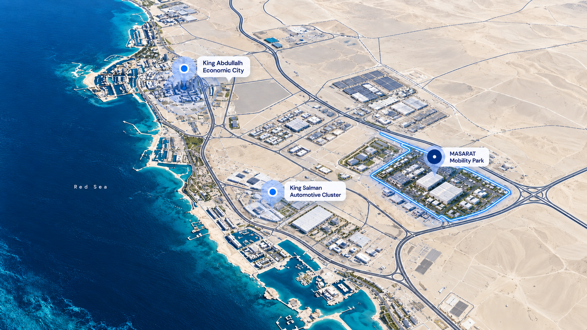

Global Tier-1
suppliers
Where global automotive capability takes root in Saudi Arabia
TASARU Supplier Hub gives global automotive suppliers a dedicated platform to establish critical manufacturing capabilities within the Kingdom
Critical manufacturing
capabilities
Dedicated supplier
platform
A place for expertise to become production
TSH brings together what the five Tier-1 suppliers need to start local production: land, manufacturing facilities and production equipment
How it worksLand
A dedicated physical base for supplier operations
Explore capabilityReal estate
Manufacturing facilities supporting the supplier platform
Explore capabilityEquipment
Production equipment supporting localized manufacturing
Explore capabilityFive component categories
One connected platform
The Hub is localizing five critical automotive component categories

Seating

Seating combines comfort, safety and function at the center of the cabin Localizing its manufacture brings a core component category closer to Saudi vehicle production

Body-in-white

The body-in-white forms the structural foundation of a vehicle Establishing this manufacturing capability locally supports a critical stage of the automotive value chain

Chassis

Chassis systems carry the vehicle and shape how it handles and performs Local capability strengthens the link between specialist component manufacturing and the OEM production line

Interior plastics

From cabin surfaces to functional interior parts, plastic components shape the in-vehicle experience Local manufacturing brings this capability into the Saudi supply chain
Exterior plastics

Exterior plastic components combine form and function across the vehicle Localizing their manufacture expands the range of components available within the Kingdom's automotive ecosystem
Connecting expertise
to production
By localizing critical automotive manufacturing capabilities and enabling technical knowledge transfer, TASARU Supplier Hub supports Saudi Arabia’s industrial development and Vision 2030 ambitions
Explore the suppliersFive global Tier-1 suppliers
Specialist automotive manufacturing knowledge
TASARU Supplier Hub
A dedicated platform for localizing critical manufacturing capabilities
The OEM ecosystem
Critical component manufacturing positioned closer to Saudi production
Within a growing automotive ecosystem
Located in MASARAT Mobility Park™ in King Abdullah Economic City, TSH connects its supplier platform to the wider Saudi automotive environment

MASARAT Mobility Park™
Start a conversation
For supplier, partnership, media or stakeholder inquiries, contact our team